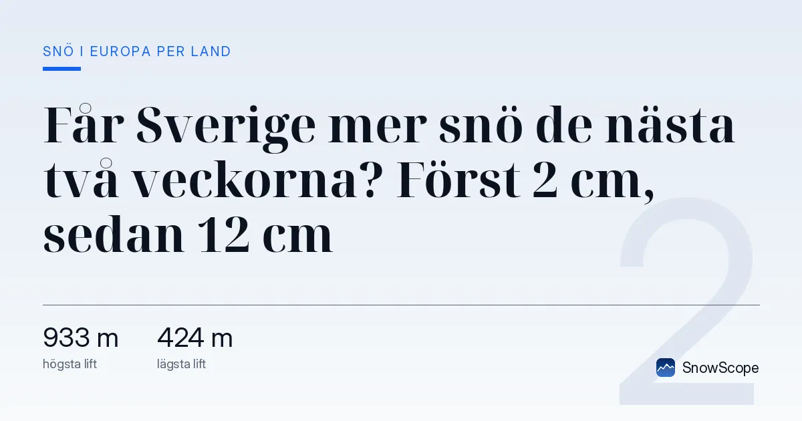

Får Sverige mer snö de nästa två veckorna? Först 2 cm, sedan 12 cm
Kommer snön att fortsätta falla över svenska fjäll under de nästa två veckorna?
Se snöprognosen för Björkliden live i SnowScope-appenSnödjup, pudervarningar och 3D-kartan, gratis.
Två veckor framåt: långsam start, sedan lättnad
Men vattnet som faller från himlen kommer att sakta ner. Under de nästa sju dagarna förväntar vi högst 6 cm nysnö. Det spelar roll för vattenhållningen: grund nysnö i början av vintern går delvis förlorad genom sublimation—vattenånga som försvinner ut i luften—innan den kan pressas samman av vind eller sitt eget värde.
Mönstret förändras efter dag sju. Vecka två, som löper från 30 november till 6 december, medför ett hopp till 12 cm möjligt. Det är verklig snöackumulation. Det kommer att lägga till märkbar djup på snöpackningen och öka den vattenekvivalent som lagras på fjällen, särskilt på höga höjder där temperaturen förblir tillräckligt kall för att bevara den genom vårtöningen.
| Skidort | Snödjup | Nysnö, 72 h | På väg, kommande dagar | Topp |
|---|---|---|---|---|
| Björkliden | 136 cm | 6 cm | 3 cm | 933 m |
| Abisko | 136 cm | 3 cm | 1 cm | 902 m |
| Ålåsens Skidbacke | 37 cm | 2 cm | 0 cm | 502 m |
| Almåsa | 35 cm | 2 cm | 0 cm | 702 m |
| Orsa Grönklitt | 34 cm | 2 cm | 0 cm | 560 m |

Vad som händer just nu
Idag, 22 november, markerar mitten av ett vått väder. Under de senaste 72 timmarna föll upp till 13 cm över delar av landet, med det tyngsta snöfallet över högt liggande marker ovanför 1 000 meter. Imorgon, 23 november, blir den snörikaste dagen av den närmaste veckan och tillför omkring 5 cm. Därefter försvagas flödet: senast 25 november förväntar vi endast 6 cm till totalt.
För tre dagar sedan, 19 november, hade Sverige 51 590 km² mindre snötäcke än idag. Den gångna veckan har varit generös i norr: Björkliden, djupledaren, håller 136 cm på 933 meter. Abisko ligger på samma nivå med 136 cm på 902 meter. Båda är uppmätta stationsvärden och representerar faktisk snö på marken just nu.

Trenden: stadigt växande täcke
Idag har den siffran växt till 314 500 km², en ökning med 57 510 km² på sju dagar. Detta markerar en konsekvent uppåtgående trend: varje dag sedan mitten av november har tillskapat vitt område eller behållit det stabilt. Tillväxten återspeglar nysnö som faller på högt liggande marker där den fastnar, och kallt luft som gradvis trycker den ner.
Det toppade den senaste pulsen. Sedan dess har de dagliga tillskotten avtappat, men trenden förblir stadigt norrut och uppåt på kalendern.
Där djupet ligger över höjdzoner
Snöpackningen delar sig tydligt efter höjd. Under 500 meter är medeldjupet endast 12 cm och täcket står på 95 procent—de lägre zonerna är fortfarande mestadels kala eller tunt täckta. Mellan 500 och 1 000 meter stiger djupet till 15 cm med fullständigt täcke. Ovanför 1 000 meter börjar den verkliga lagringen: från 1 000 till 1 500 meter är medelvärdet 41 cm över fullständigt täcke. Vid 1 500 till 2 000 meter når medeldjupet 66 cm vid 100 procents täcke.
Denna vertikala skiktning är exakt vad en hydrolog bevakar: bergstopparna är redan vattenbehållare. Då vintern fördjupas och ny nederbörd faller kommer denna övre zon att bli djupare. Vid januari och februari, då frysning-töning-cykeln intensifieras, kommer detta lagrade snövikten att påbörja sin långsamma väg nersluttningen och in i bäckar och grundvattnet.
Jämfört med tidigare vintrar
Tre av Sveriges skidorter ligger över sitt normalvärde för detta datum. Almåsa och Orsa Grönklitt ligger båda på 109 respektive 200 procent av normalt—dock är Orsas normal mycket låg, så jämförelsen är beskeden. Abisko, på 107 procent av vanligt, visar också en hälsosam start. Björkliden och Ålåsens Skidbacke ligger närmare sina långsiktiga medelvärden. Totalt sett följer landet 107 procent av median normalt, vilket föreslår att denna tidiga vinter sitter något före tidigare säsonger än så länge.
Praktisk framtidsbild
För vattenberedskapare och hydrologer är signalen tydlig: ackumulation fortsätter men kommer att stanna vecka ett innan den återtas vecka två. Höga sluttningar ovanför 1 500 meter bör se stadigt fördjupning genom december, med vecka två:s 12 cm puls som den mest betydelsefulla händelsen under de nästa två veckorna. Lägre skidorter och områden med tunn snö förblir sårbara för töning eller bar mark om temperaturen stiger plötsligt.
Tips för skidåkare
- Håll uppsikt imorgon, 23 november: det blir snörikaste dagen under nästa vecka med 5 cm möjligt. Planera resor eller utomhusarbete omkring detta tillfälle.
- Högt liggande marker ovanför 1 500 meter är nu din lagringzon: 66 cm medeldjup med fullständigt täcke innebär att det kommer att hålla nysnö och bevara den genom töningscykeln.
- Vecka två (30 november till 6 december) är när verklig ackumulation sker. Om du hanterar vattenkällor, planera för 12 cm potentiell tillförsel då; vecka ett ger lite.
- Lägre höjder under 500 meter förblir riskabla: endast 12 cm medeldjup och 95 procents täcke. Stenar eller kala fläckar är fortfarande sannolika där, så kontrollera terrängen noga.
- Kontrollera den senaste lavinprognosen om du planerar att åka till eller åka skidor ovanför 1 000 meter; nysnö som slår ned på befintlig packad snö kan förändra stabiliteten.
Om siffrorna
Snödjupen för skidorterna är det djupaste snötäcket på ortens övre backar på det angivna datumet; de är uppskattningar för ett område, inte en mätning på en punkt. Prognoser kan ändras. Läs alltid den officiella lavinprognosen innan du åker offpist.
Citera den här rapporten
För forskning, undervisning eller press: siffrorna och diagrammen får återanvändas fritt under CC BY 4.0 med den här källhänvisningen.
SnowScope (2026), Får Sverige mer snö de nästa två veckorna? Först 2 cm, sedan 12 cm, https://snowscope.app/blog/sv/2026/11/sweden-two-week-snow-outlook-22-november-2026.html, hämtad 2026-11-22
SnowScope (Atlas Labs). (2026, November 22). Får Sverige mer snö de nästa två veckorna? Först 2 cm, sedan 12 cm. SnowScope snow reports. https://snowscope.app/blog/sv/2026/11/sweden-two-week-snow-outlook-22-november-2026.html
BibTeX
@misc{snowscope2026swedentwoweeksnowoutlook,
author = {{SnowScope (Atlas Labs)}},
title = {Får Sverige mer snö de nästa två veckorna? Först 2 cm, sedan 12 cm},
year = {2026},
month = nov,
howpublished = {\url{https://snowscope.app/blog/sv/2026/11/sweden-two-week-snow-outlook-22-november-2026.html}},
note = {Published 2026-11-22 20:35 UTC; accessed 2026-11-22}
}· CC BY 4.0 · Metoder, data och verktyg →
Björkliden: snö och temperatur efter höjd, i vinter jämfört med förra (verktyg) →
Följ Björkliden
Gratis: ett meddelande när nysnö är på väg, och prognosen varje morgon.